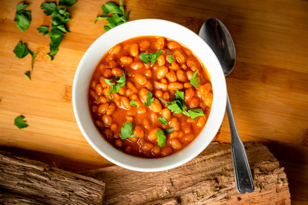

Beans

Description
Beans are a great source of protein and can be used in many dishes.
Ingredients
- 1 cup of beans
- 2 cups of water
- Salt to taste
- Optional: spices or herbs
Steps
- Rinse the beans under cold water.
- In a pot, combine the beans and water.
-
Bring to a boil, then reduce heat and simmer for 1-2 hours until tender.
- Add salt and any optional spices or herbs to taste.
- Serve hot as a side dish or in salads.
Home